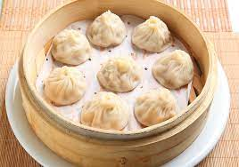
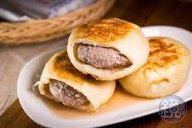

文字+圖片練習 學號:91034250 姓名:邱裕展
湯包
準備材料
A:食材
- 細絞豬絞肉（3肥7瘦） 300g
- 蔥薑水 50g
- 鹽 1.5茶匙
- 皮凍 300g
- 白胡椒粉 少許
- 醬油 1/2湯匙
- 棕櫚糖或二砂 1茶匙
- 香油 適量
B:調味料
- 米酒 1大匙
- 醬油 1大匙
- 鹽 1/2茶匙
- 白胡椒粉 1/4茶匙
- 太白粉 1大匙
- 麻油 1大匙
準備材料
| A:食材 |
<
湯包是皮薄而且咬下去會流湯，
也有人稱作小籠湯包，而小籠包的皮通常比較厚，
吃起來像是迷你版的包子，這兩種食物在台灣都滿受歡迎的，
而且名稱也有混用的狀況，如果喜歡多汁口感，
就選擇有包含「湯」這個字的最保險不會錯！

餡餅
準備材料
A:餅皮食材
- 中筋麵粉 400g
- 糖 1大匙
- 鹽 1/2小匙
- 溫水 230ml
B:餡料食材
- 蔥花 480g
- 香油 1大匙
- 白胡椒粉 1/2小匙
- 鹽 1/4小匙
- 豬油 1大匙
準備材料
一種美味的肉餅，餅皮很高，四四方方，餡料層上有用麵餅做成的蓋子。
餡料上沒有麵餅遮蓋的則稱為「陷餅」。
這些餡餅混合了各種肉類和醬料後進行烘焙，
就像是現如今沒有鍋底的焙盤（餅皮就是鍋底，堅硬且不可食用）。
為了能經受數小時的烘焙，餅皮通常製作成若干英寸的厚度。
